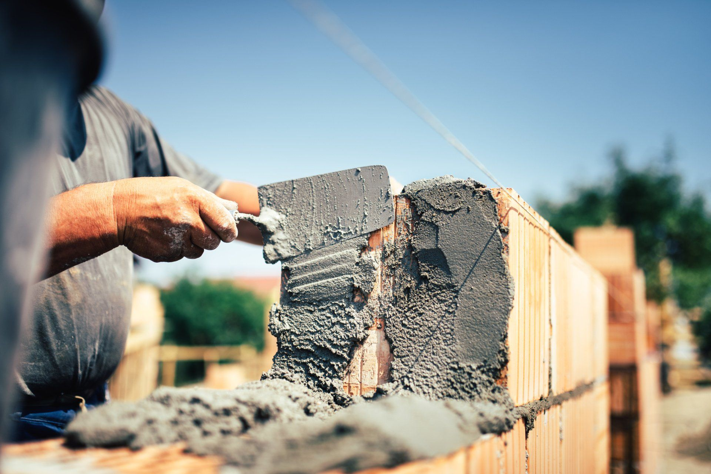
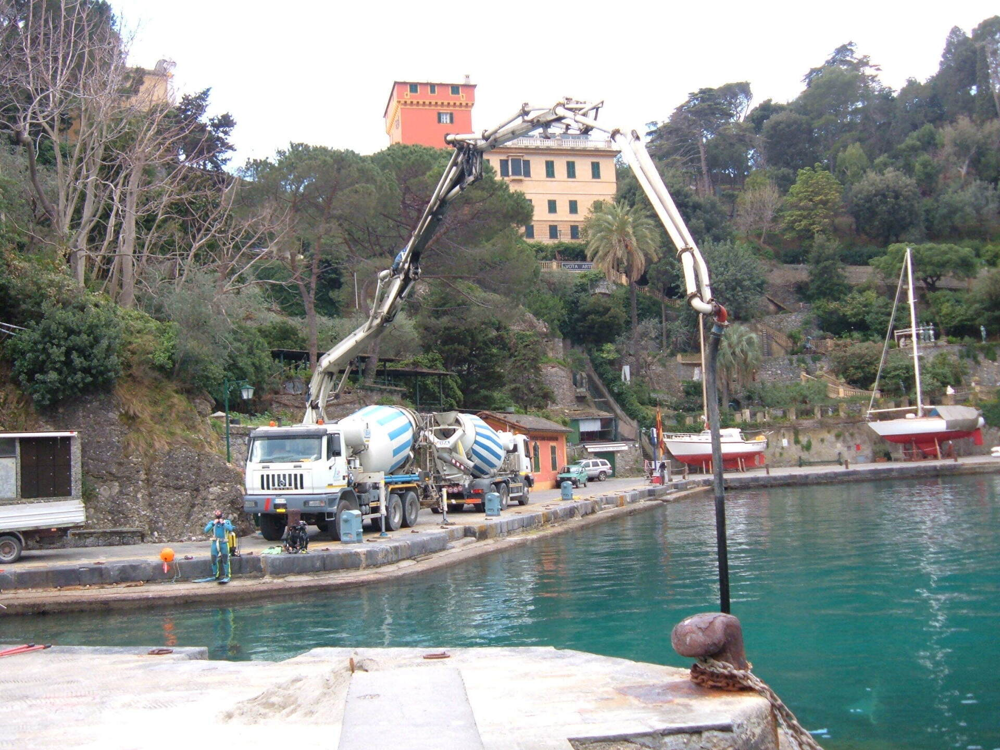
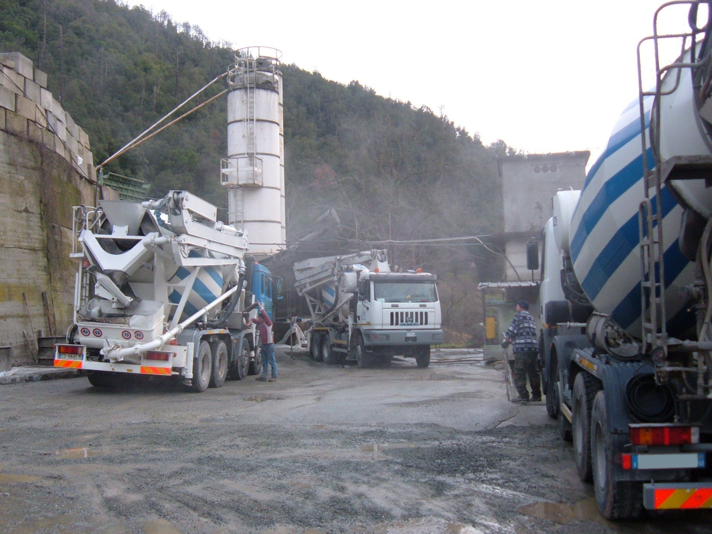
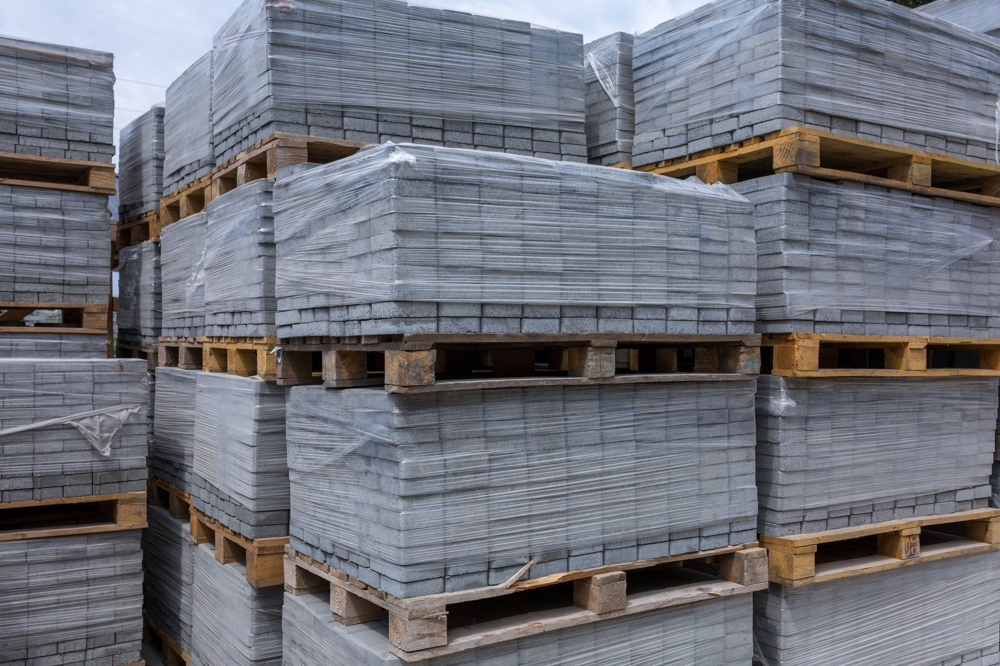
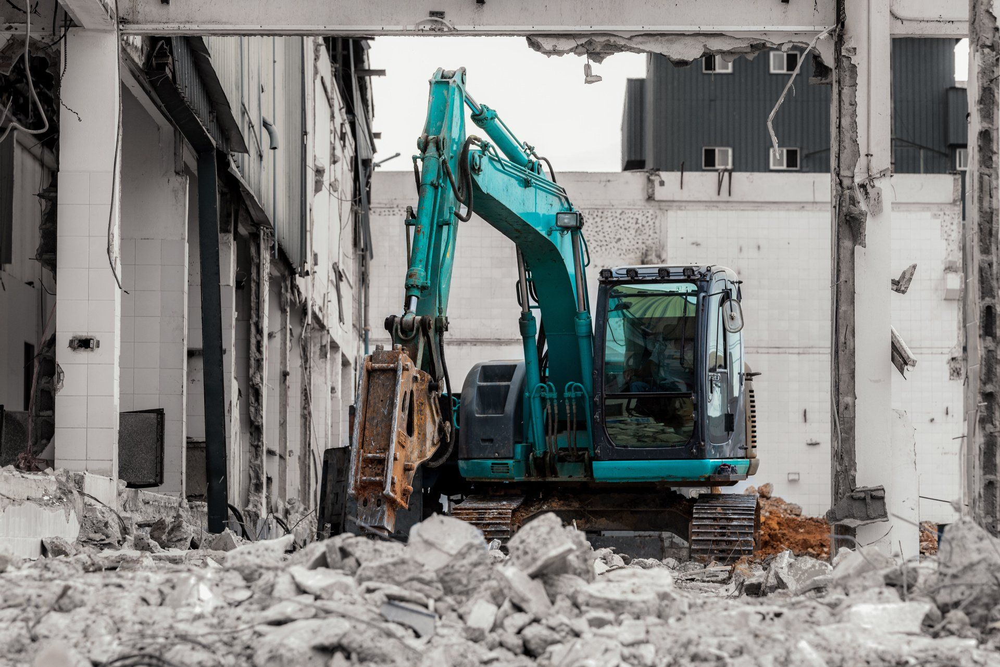

Calcestruzzo
- CAM — Certificato CP DOC 262
- A prestazione garantita
- A composizione richiesta
- Con aggregati da riciclo
- Architettonico e colorato
Produzione e fornitura di calcestruzzo preconfezionato, manufatti su misura e aggregati da riciclo. Prodotto certificato, attrezzature all'avanguardia, servizio su tutto il Levante ligure.


La Lusardi Calcestruzzi srl ha sede a Casarza Ligure, in provincia di Genova, e opera da più di un ventennio nella produzione e fornitura di calcestruzzo preconfezionato.
L'azienda si occupa anche del recupero delle macerie edili, producendo aggregati da riciclo e materiali edili in generale, e svolge attività di scavo, demolizione e trasporto in conto proprio e in conto terzi.
Uno staff specializzato e un parco macchine all'avanguardia sono a disposizione del cliente per personalizzare prodotti, consegna e servizi.
Scopri i nostri impianti →


Chiamaci: valutiamo insieme prodotto, quantità e logistica di consegna.
☎ +39 0185 46266